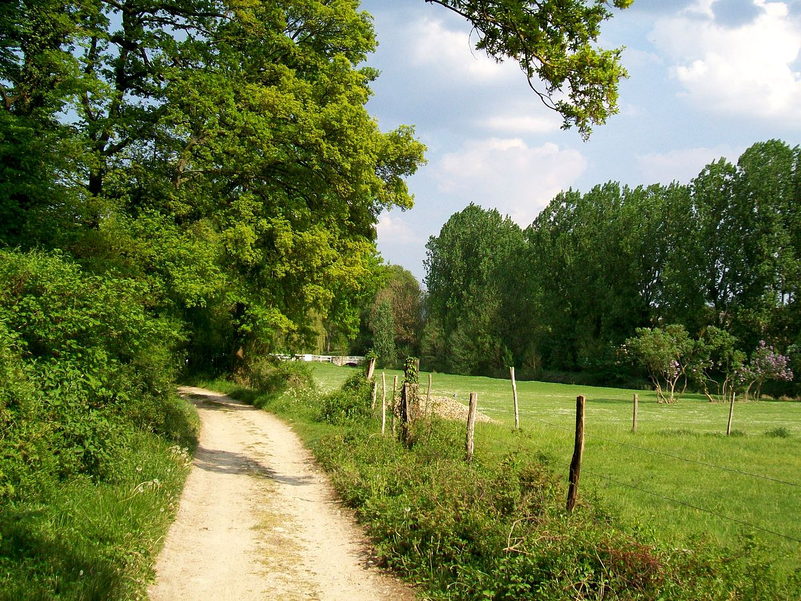
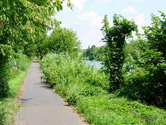

CheminsGalilée
Accueil
A pied:
- Coupole
- Stade
- Borne Blanche
Aucun chemin
Utilisateur
Découverte de chemins
Aller à pied vers:
La Coupole
Le Stade Alain Mimoun
La Borne Blanche
Aller en voiture vers:
Prochainement
 